Российский университет дружбы народов ## Цель работы
Получить навыки работы с планировщиками событий cron и
at
Изучить механизмы периодического и однократного выполнения
задач
Научиться настраивать задания по расписанию
Теоретическая справка
Планировщики событий в Linux
Основные понятия: - cron — планировщик для периодических
задач - at — планировщик для однократных задач -
crontab — файл с расписанием задач -
/etc/cron.hourly/, /etc/cron.daily/ —
директории для скриптов
Просмотр статуса демона crond
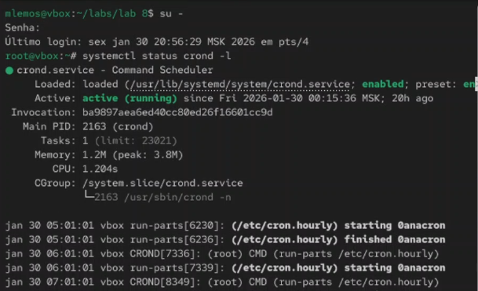
Рис. 1. Запуск терминала и получение
полномочий администратора, просмотр статуса демона crond
Просмотр содержимого файла /etc/crontab
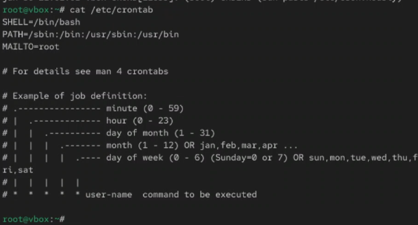
Рис. 2. Просмотр содержимого файла
конфигурации /etc/crontab
Список заданий в расписании
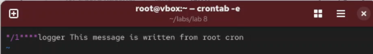
Рис. 3. Просмотр списка заданий в
расписании и открытие файла расписания на редактирование
Добавление строки в расписание
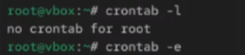
Рис. 4. Открытие текстового редактора vi
и добавление строки в файл расписания
Просмотр списка заданий и журнала событий
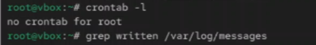
Рис. 5. Просмотр списка заданий в
расписании, просмотр журнала системных событий
Изменение записи в расписании
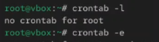
Рис. 6. Изменение записи в расписании
crontab
Просмотр обновленного списка заданий
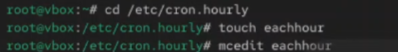
Рис. 7. Просмотр списка заданий в
расписании
Создание файла сценария в /etc/cron.hourly
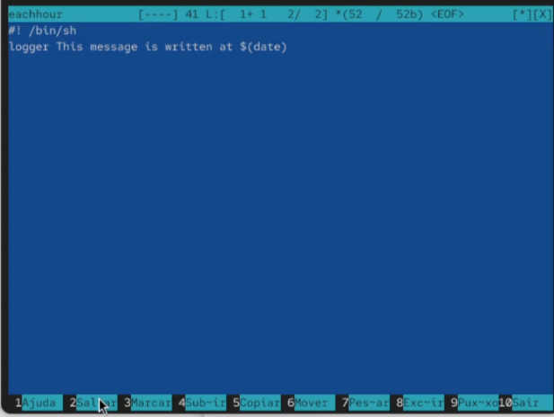
Рис. 8. Открытие каталога
/etc/cron.hourly и создание в нём файла сценария с именем
eachhour
Запись скрипта в файл eachhour
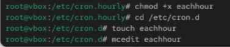
Рис. 9. Открытие файла eachhour для
редактирования и прописывание в нём скрипта
Создание файла с расписанием
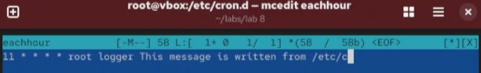
Рис. 10. Делаем файл сценария eachhour
исполняемым, открытие каталога /etc/crond.d и создание в нём файла с
расписанием eachhour, открытие файла на редактирование
Добавление содержимого в файл расписания
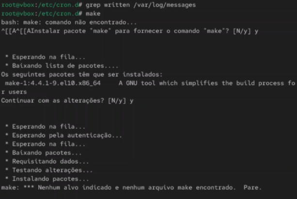
Рис. 11. Добавление содержимого в файл и
сохранение изменений
Просмотр журнала через 2 часа
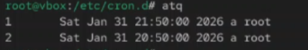
Рис. 12. Просмотр журнала системных
событий через 2 часа
Проверка службы atd
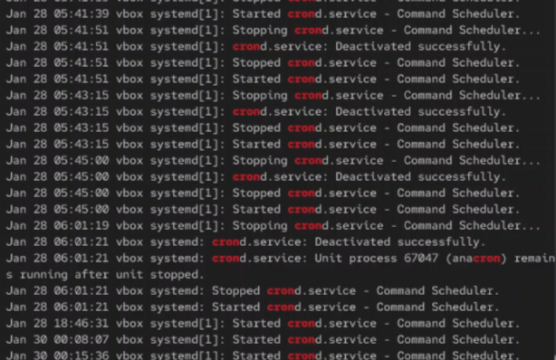
Рис. 13. Запуск терминала и получение
полномочий администратора, проверка загрузки и включения службы
atd
Создание задачи с at
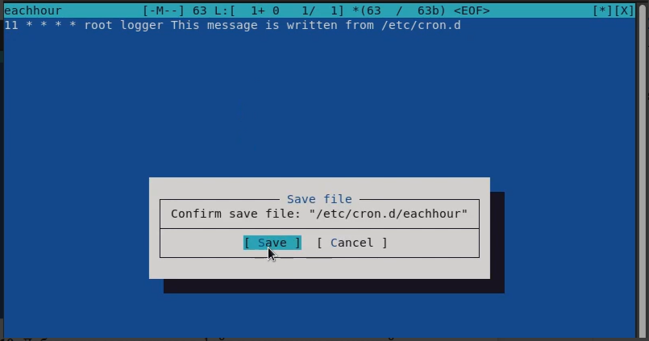
Рис. 14. Создание задачи выполнения
команды logger message from at в 12:50, закрытие оболочки. Проверка
планировки задачи и выполнения её в указанное время
Вывод
В ходе выполнения лабораторной работы были получены навыки работы с
планировщиками событий cron и at. Освоены методы создания периодических
задач с помощью crontab и однократных задач с помощью at, настройка
расписаний и мониторинг выполнения заданий.
Список литературы
[1] Linux man pages: cron(8), crontab(5), at(1), atd(8)